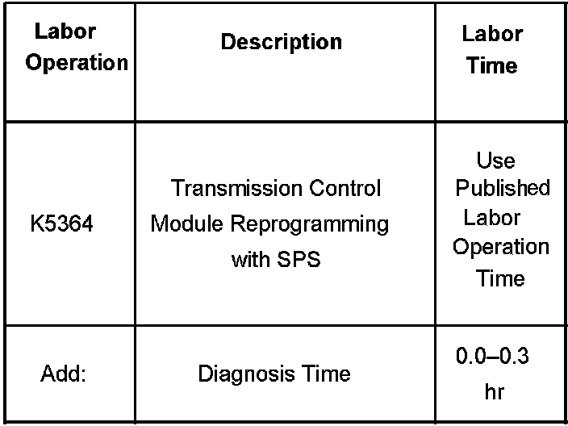

A/T - 6L80 Adapt Fails,No Forward/Reverse,DTC's Set
Bulletin No.: 06-07-30-033Date: December 07, 2006
INFORMATION
Subject:
Diagnosis for Service Fast Learn Adapts Fails, No Forward or No Reverse, DTCs P0796, P2723, P2763 Set
Models:
2007 Cadillac Escalade, Escalade ESV, Escalade EXT
2007 GMC Yukon Denali, Yukon Denali XL
with 6L80 Automatic Transmission (RPO MYC)
When running the Service Fast Learn Adapts procedure with the Tech 2(R), the procedure may fail and the following may result:
No forward and/or reverse ranges
DTCs P0796, P2723, and P2763 may set alone or in any combination
If the Service Fast Learn Adapts is run and fails, do the following steps:
Place the transmission in PARK.
Exit the SFL procedure on the Tech-2(R).
Turn the ignition key to the OFF position.
Open the vehicle door with the ignition key still in the OFF position.
Wait at least 30 seconds before starting the vehicle or using the Tech-2(R).
Check and clear any DTCs that may have been set.
Adapts will not be overwritten or updated if the Service Fast Learn Adapts fails. There is no impact to the TCM.
A revised transmission calibration has been developed to address these issues. Reprogram the TCM with the latest software available on TIS2WEB.
These conditions may also be caused by the TCM not properly completing its shutdown. To prevent these conditions from occurring, the following shutdown procedure must be performed after running Service Fast Learn Adapts.
Place the transmission in PARK.
Exit the Service Fast Learn Adapts procedure on the Tech 2(R).
Turn the ignition key to the OFF position.
Open the vehicle door with the ignition key still in the OFF position and wait at least 30 seconds before starting the vehicle or using the Tech2(R).

Warranty Information

Disclaimer